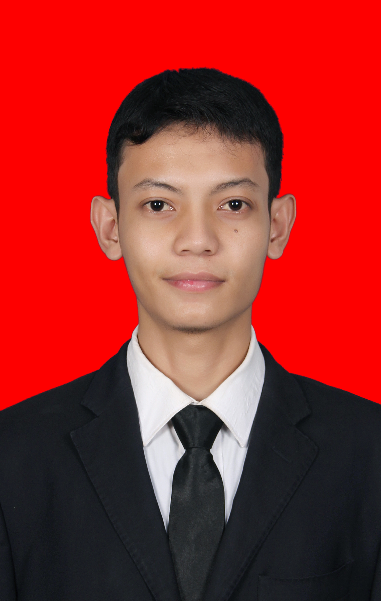

Menu Frame
Form
CURICULUM VITAE
BIODATA
Nama : Rizki Ananda
Alamat : Lampriet
TTL : Ulee Blang Mane, 01 Desember 1996
Email : rizkidaimuda01@gmail.com

PENDIDIKAN
SD Negeri 2 Blang Mangat: lulus Tahun 2002
MTS Banda Masen : lulus Tahun 2011
MAN lhokseumawe: lulus Tahun 2014
Universitas Islam Negeri Ar-Raniry: lulus Tahun 2019
KEMAMPUAN DAN PENGALAMAN KERJA
Public Speaking
Pengalaman Kerja: Belum Ada
MEDIA SOSIAL
@rizki.ibnuadnan
Rizki Ananda Ibnu Adnan